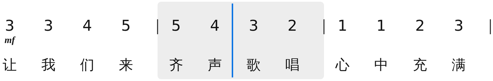

卡农进行 · 钢琴弹唱伴奏
教师考编
一段旋律，自动配好伴奏。
即兴伴奏、弹唱与说课谱，
21 套标准织体，真音符可改。
专业曲谱平台。出版级、科教级制谱。
简谱、五线谱、六线谱同一份数据一键互切，智能配伴奏。
给考编、艺考、师范的老师和学生，也给每一位弹唱的人。
打开浏览器就能用 · 免注册 · 本地实时保存

写一遍，三种谱同时就绪。
简谱录入、五线谱交作业、六线谱给吉他手，它们是同一份数据的三种视图。
改一个音，三处同步；移调不用重抄。



简谱、五线谱、六线谱互切，
教学对照谱逐列对齐。
符干、符杠与间距遵循
《Behind Bars》与国标简谱惯例。
MusicXML、MIDI 进出，
MuseScore、Sibelius 直接打开。